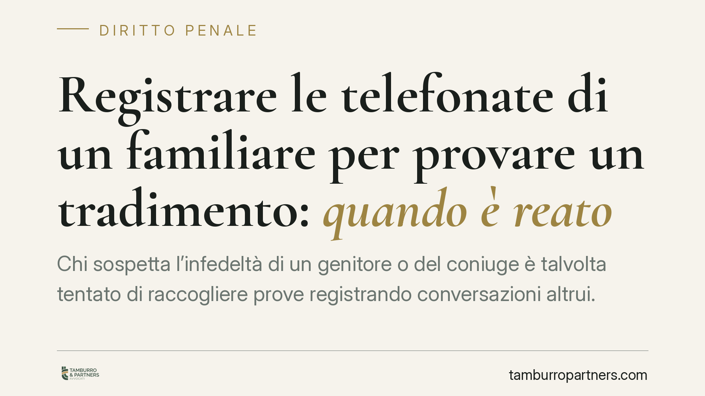

Registrare le telefonate di un familiare per provare un tradimento: quando è reato
Chi sospetta l'infedeltà di un genitore o del coniuge è talvolta tentato di raccogliere prove registrando conversazioni altrui. Ma captare comunicazioni di cui non si è parte può integrare un reato: il vincolo di parentela non è una scriminante e l'infedeltà non fa venir meno il diritto alla riservatezza. Una pronuncia recente, da verificare nei suoi estremi, torna sul punto. Vediamo i confini.

Il caso
La questione è ricorrente nei contenziosi familiari: figli o coniugi che, per dimostrare un tradimento, registrano o captano le telefonate di un altro familiare. La tentazione è comprensibile, ma la raccolta della prova non è priva di limiti penali.
Secondo quanto riferito da una pronuncia della Corte di Cassazione (sent. n. 9222/2026, estremo da verificare), captare le conversazioni di un genitore per documentarne l'infedeltà non è giustificato né dal legame di parentela né dalla finalità familiare. Il principio di fondo, però, è consolidato a prescindere dalla singola sentenza: l'infedeltà non comporta la perdita del diritto alla privacy.
Inquadramento normativo
Occorre distinguere con precisione due situazioni diverse, perché il trattamento penale cambia.
Registrare una conversazione a cui si partecipa è generalmente lecito. Chi è parte del colloquio può documentarlo: la registrazione vale come memoria di quanto l'interlocutore ha detto in sua presenza. Non si configura reato, salvo poi valutare l'utilizzabilità e la liceità dell'eventuale diffusione.
Captare conversazioni altrui, cioè colloqui ai quali non si prende parte, è ben diverso. Qui vengono in rilievo i reati contro l'inviolabilità delle comunicazioni. L'art. 617 c.p. punisce chi prende fraudolentemente cognizione di comunicazioni o conversazioni telefoniche o telegrafiche tra altre persone, o le interrompe o impedisce. L'art. 617-quater c.p. sanziona l'intercettazione fraudolenta di comunicazioni informatiche o telematiche. L'art. 617-bis c.p. riguarda invece una fase a monte, cioè l'installazione di apparecchiature dirette a intercettare o impedire comunicazioni altrui.
L'esatta qualificazione dipende dalla condotta concreta: chi installa un dispositivo e chi poi prende cognizione del contenuto possono rispondere a titoli distinti. È un profilo tecnico che va verificato caso per caso.
Si aggiunga un'ulteriore ipotesi: accedere all'account di posta, ai messaggi o al profilo social di un altro soggetto, utilizzandone credenziali senza autorizzazione, può integrare il reato di accesso abusivo a sistema informatico o telematico previsto dall'art. 615-ter c.p.
Perché la parentela non salva
Il punto fermo è che il rapporto di famiglia non costituisce una causa di giustificazione. Il genitore, il coniuge, il convivente restano titolari del diritto alla riservatezza delle proprie comunicazioni. L'eventuale condotta infedele non autorizza il familiare a violare quel diritto, né trasforma in lecita una captazione altrimenti vietata.
In altri termini: il fine di tutelare l'unità familiare o di provare un torto subìto non legittima l'uso di mezzi penalmente rilevanti.
Implicazioni pratiche
Per chi è coinvolto in una separazione o in un giudizio di famiglia, la conseguenza è doppia.
Sul piano penale, la raccolta scorretta della prova può esporre lo stesso soggetto che intendeva far valere un proprio diritto a un procedimento penale, con possibile denuncia da parte del familiare captato.
Sul piano civile e familiare, una prova raccolta illecitamente rischia di essere inutilizzabile nel giudizio, vanificando lo sforzo probatorio e, anzi, indebolendo la posizione di chi l'ha prodotta.
Cosa fare in concreto
- Registra solo i colloqui a cui partecipi. La registrazione di una conversazione propria è, di regola, lecita; evita invece di captare dialoghi tra terzi.
- Non installare dispositivi per intercettare telefonate o comunicazioni di altri familiari: la sola installazione a tale scopo può avere rilievo penale.
- Non accedere ad account, email o chat altrui con credenziali non tue o carpite: puoi incorrere nell'art. 615-ter c.p.
- Valuta con un legale quali elementi sia possibile raccogliere e con quali modalità, così da evitare condotte penalmente rilevanti e prove inutilizzabili.
- Verifica sempre l'utilizzabilità del materiale prima di depositarlo in giudizio: una prova illecita può ritorcersi contro chi la produce.
---
Contributo informativo a cura di Tamburro & Partners Avvocati - Avv. Giuseppe Tamburro. Non costituisce parere legale.
Ogni condominio ha una storia a sé.
Se gestisci un'amministrazione e vuoi un confronto su una specifica questione condominiale, scrivi allo studio. Ti rispondiamo entro un giorno lavorativo.